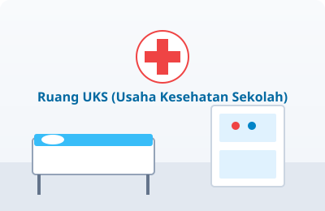
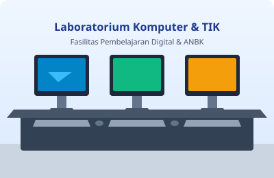
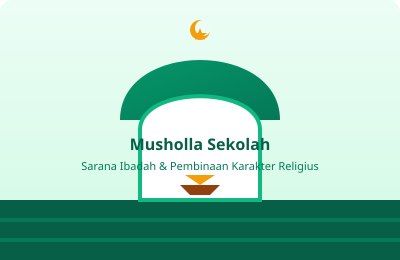

Sarana & Fasilitas Sekolah
Lingkungan belajar yang lengkap, aman, bersih, dan nyaman demi mengoptimalkan tumbuh kembang seluruh siswa SDN 057237 Bukit Selamat.
Fasilitas Penunjang Belajar
Pemerintah dan pihak sekolah terus berkomitmen memelihara serta melengkapi sarana pembelajaran berkualitas.

1. Ruang Kelas Representatif
Tersedia 6 ruang kelas untuk rombongan belajar kelas I s.d. kelas VI. Ruang kelas dilengkapi meja-kursi siswa ergonomis, papan tulis white-board, pojok baca kelas, sirkulasi udara segar, dan alat peraga edukatif.

2. Perpustakaan & Pojok Baca
Pusat sumber belajar dengan ribuan koleksi buku teks Kurikulum Merdeka, buku fiksi anak, ensiklopedia bergambar, cerita rakyat nusantara, dan area membaca santai berkarpet.

3. Lapangan Olahraga & Upacara
Halaman tengah multifungsi berlapis semen halus untuk pelaksanaan upacara bendera hari Senin, senam kesegaran jasmani setiap Jumat/Sabtu, lapangan bulutangkis, bola voli mini, dan latihan baris-berbaris Pramuka.

4. Usaha Kesehatan Sekolah (UKS)
Fasilitas pelayanan kesehatan pertama siswa saat sakit atau cedera ringan di sekolah. Dilengkapi ranjang periksa pasien, lemari obat P3K, timbangan berat badan, alat ukur tinggi badan, dan termometer digital.

5. Ruang Komputer & TIK
Sarana pembelajaran literasi digital dan pelaksanaan gladi bersih serta Asesmen Nasional Berbasis Komputer (ANBK). Dilengkapi unit laptop/komputer klien, server lokal, router internet, dan cadangan daya UPS.

6. Musholla Sekolah
Sarana ibadah sholat berjamaah (Dhuha & Dhuhur), pembinaan tahsin Al-Qur'an, dan kajian keagamaan Islam bagi dewan guru dan siswa. Tersedia tempat wudhu bersih terpisah laki-laki dan perempuan.
7. Sanitasi & Toilet Bersih
Toilet terpisah antara siswa laki-laki, siswi perempuan, dan guru. Sumber air bersih mengalir lancar, dilengkapi bak penampungan, wastafel cuci tangan pakai sabun (CTPS), dan ventilasi terjaga.
8. Area Hijau & Taman Toga
Taman sekolah yang asri dan rindang dengan pepohonan peneduh serta kebun Tanaman Obat Keluarga (TOGA). Berfungsi sebagai sarana edukasi cinta lingkungan hidup dan lokasi istirahat yang sejuk.